Uma tela ESP32 com touch que mostra quanto da janela de 5 horas e da semana você já usou, o que cada sessão está fazendo e quanto esse uso custaria pela API. Pela USB, sem Wi-Fi, sem conta nova.
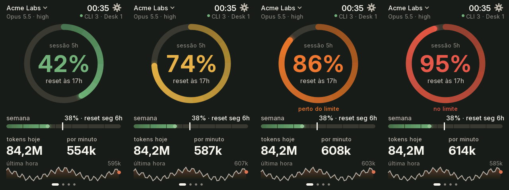
Capturas tiradas do próprio aparelho, com o daemon em modo demonstração: org, sessões e números são fictícios.
Arraste para os lados para trocar de tela. Toque para abrir detalhes. Da borda de baixo para cima, volta para a principal de qualquer lugar.
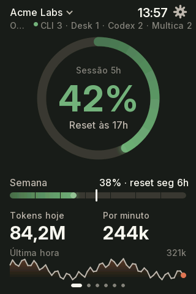
A janela de 5 h no anel, que muda de cor com o uso: verde, amarelo a 70%, laranja a 80%, vermelho a 90%. A semana com o ritmo esperado, tokens do dia, por minuto e a última hora.
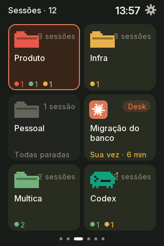
Os workspaces do herdr em páginas, com quantos cartões a tela comporta. A pasta tem a cor do estado mais urgente. O Claude Desktop fica num workspace fixo no fim e, com uma sessão só, o cartão já é ela. Sem herdr, as sessões se agrupam por projeto.
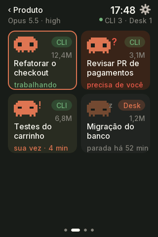
As sessões de um workspace, em páginas e por prioridade: aprovar, trabalhando, sua vez, paradas. Cada uma com um mascote no estado dela. O título "‹ workspace" volta para a lista; toque num cartão para trazer a sessão à frente no Mac.
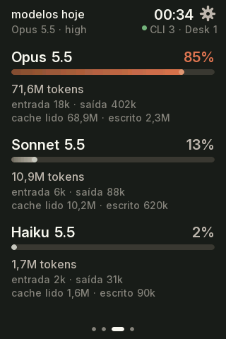
Os modelos usados hoje e a fatia de cada um, com entrada, saída e cache.
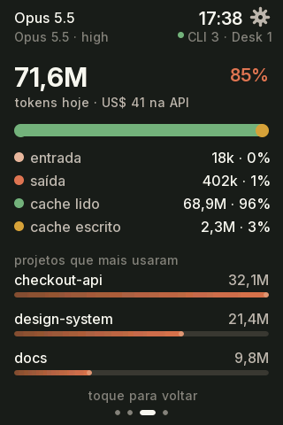
Composição dos tokens, custo equivalente na API e os projetos que mais usaram.
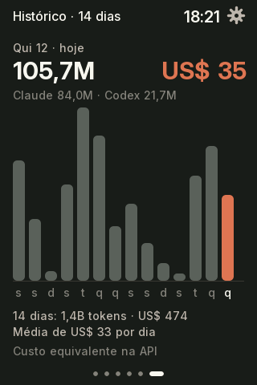
Tokens e custo por dia nas últimas duas semanas. Toque numa barra para ver o dia.
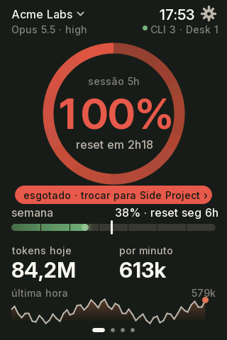
Com outra org salva no claude-swap, a tela sugere a troca para a de menor uso.
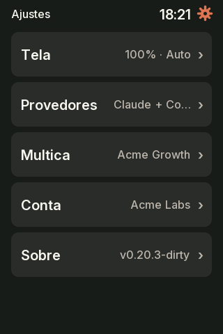
Pela engrenagem ao lado do relógio ou arrastando do topo da tela, numa lista de grupos como no celular: Tela, Som, Descanso e Cartão SD nas placas que têm, Conta e Sobre.
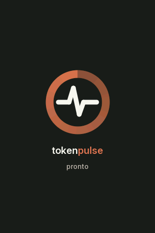
E uma tela de diagnóstico que diz o que falta quando o Mac some: cabo, daemon ou dados.
Em Ajustes → Tela → horizontal, cada tela ganha uma versão deitada: o anel à esquerda, as sessões em 3 colunas e o detalhe do modelo com os projetos ao lado.
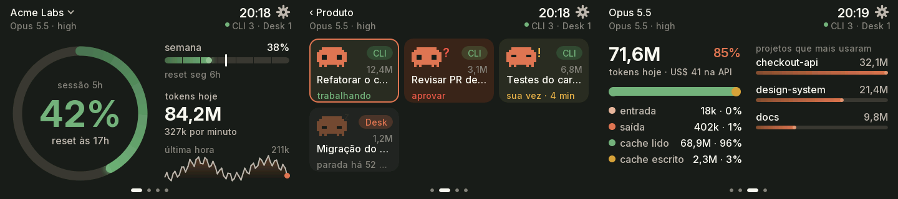
Pensado como um objeto de mesa: bonito de longe, rápido de ler, e que não pede atenção à toa.
Fontes Inter suaves, anti-aliasing e o envio da tela no segundo núcleo do ESP32: cerca de 30 quadros por segundo.
Mola nas barras e no anel, halo na ponta do progresso, pulso quando muda de faixa. Parado, fica calmo.
Escurece quando ninguém mexe e quase apaga das 22h às 7h. Um toque acende sem trocar de tela.
Troque de org pela tela. Pede dois toques, porque troca o login de todas as sessões do Mac.
Firmware novo em cerca de 15 segundos, com verificação de md5 e a versão anterior preservada se algo falhar.
Nada vai para a nuvem: os logs, o token e as sessões ficam no seu computador. A placa só desenha.
O tokenpulse acompanha qualquer sessão do Claude Code: a CLI num terminal comum, o Claude Desktop e as sessões abertas no herdr. O herdr é opcional e só acrescenta detalhes.
| Sessões comuns (terminal, Desktop) | Sessões no herdr | |
|---|---|---|
| Aparecem na tela | sim, as com atividade na última hora | sim, todos os painéis abertos |
| Tokens, modelos, custo, histórico | sim, dos logs do Claude Code | sim |
| Estado (trabalhando, sua vez, parada) | estimado pelos logs | o do herdr, na hora |
| "Precisa de você" (esperando aprovação) | — | sim |
| Agrupamento | por projeto (pasta) | pelos workspaces do herdr |
| Nome no cartão | título da sessão ou pasta | o nome que você deu à aba |
| Tocar para trazer à frente | Desktop: abre o app | sim, no painel do herdr |
As duas convivem: com o herdr rodando, as sessões de fora dele aparecem num grupo "Fora do herdr".
O Mac faz o trabalho pesado e a placa só desenha. Um daemon em Python lê os logs do Claude Code, busca o % na mesma API que o próprio Claude Code usa e manda um quadro JSON por segundo pela USB.
Quando você toca na tela para trocar de org ou trazer uma sessão à frente, a placa pede uma ação de uma lista fechada (focus, switch, login). O daemon nunca executa texto vindo da serial.
flowchart LR logs["Logs do Claude Code"] --> d["tokend.py
(no Mac)"] api["API de uso
da Anthropic"] --> d herdr["herdr"] --> d cswap["claude-swap"] --> d d -- "USB: 1 quadro JSON/s" --> esp["ESP32
tela + touch"] esp -- "toques: focus / switch / login" --> d
Tudo que muda de uma placa para outra fica num header só, com um perfil do que ela tem (touch, IMU, LED, botão). A interface escolhe o layout pelo tamanho da tela e pelo perfil, nunca pelo nome da placa. Escolha o modelo: a instalação e o OTA, mais abaixo, seguem a escolha.
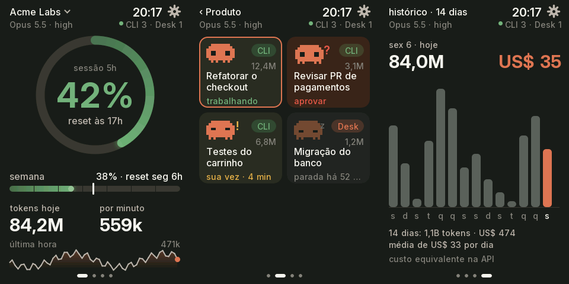
http://<nome>.local; o WiFi só liga quando pedido em Ajustes → SobreA USB-C dela só passa dados num dos lados do plugue. Se a placa liga mas o Mac não a vê, gire o plugue.
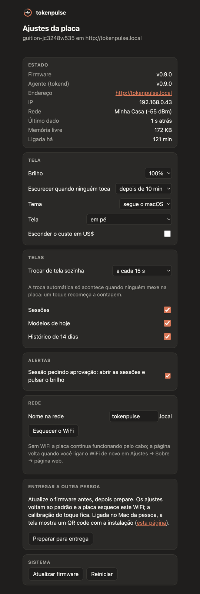
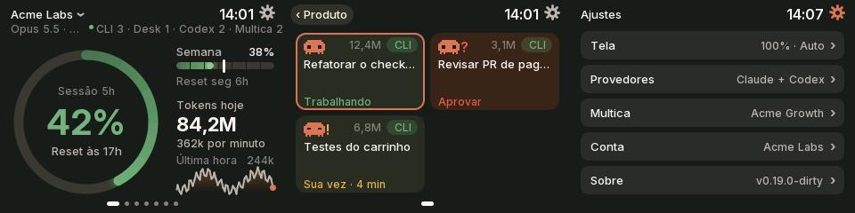
Na primeira vez a tela pede quatro toques com a caneta, um em cada canto. Para refazer: Ajustes → Sobre → calibrar o toque.
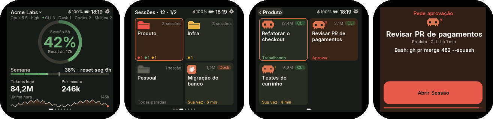
Parada, a tela troca o painel por versões resumidas em fundo preto, uma a cada 15 s e cada uma num lugar novo. Em Ajustes → Descanso você escolhe quais telas entram e o relógio com ou sem segundos.
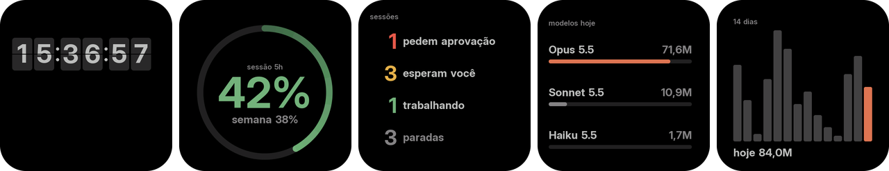
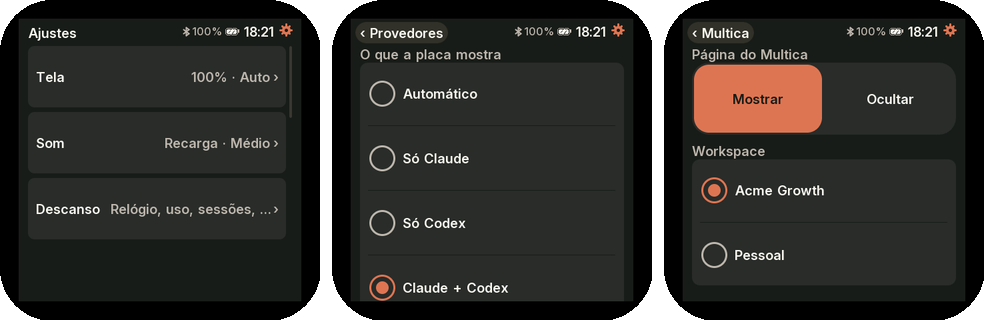
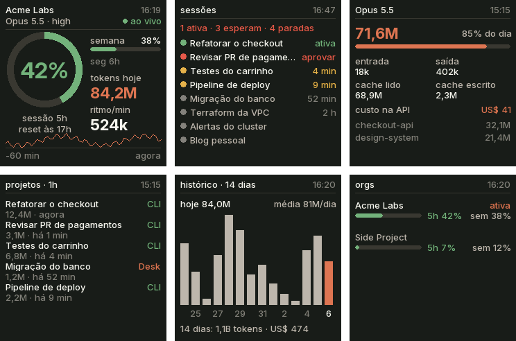
http://<nome>.local: brilho, noite, tema, rotação, tempo e telas da volta, nome na redeRoda uma versão mínima do firmware, sem os ajustes por toque. A primeira gravação vai pelo atualizador do firmware de fábrica, sem abrir a caixa, e substitui o firmware da GeekMagic.
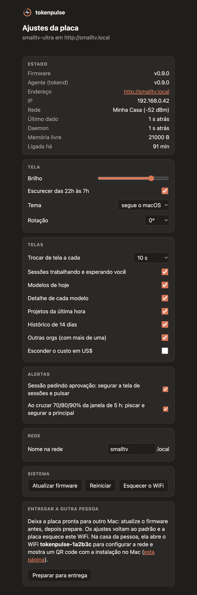
Outra placa? Copie o header mais parecido e cumpra o contrato de placa.
Você precisa de um Mac com uv e o Claude Code logado. O herdr e o claude-swap são opcionais e liberam as sessões por workspace e a troca de org.
Os comandos e os avisos seguem o modelo escolhido.
setup.sh não serve para ele. O firmware de fábrica da GeekMagic é substituído e só volta com o .bin dele.No Chrome ou no Edge do computador, com a placa plugada na USB, o botão grava o firmware do último release. Depois, instale o daemon no Mac com um comando: veja como começar.
Gravar apaga os ajustes da placa. Se o tokenpulse já roda neste Mac, ele ocupa a porta: pare com launchctl bootout gui/$UID/com.gilsondev.tokenpulse e religue depois com o mesmo comando de instalação.
git clone https://github.com/gilsondev/tokenpulse
cd tokenpulseEle acha a placa, grava o firmware do último release pela USB e liga o daemon no login do macOS. Em alguns segundos a placa sai de "sem dados do Mac" e mostra o seu uso. O log fica em ~/Library/Logs/tokenpulse.log.
./setup.sh guition-jc3248w535Na primeira vez a ESP32-2432S028R abre a calibração: toque com a caneta no centro de cada alvo. Para refazer depois: Ajustes → Sobre → calibrar o toque.
O daemon roda direto desta pasta: não apague nem mova o tokenpulse. Para mudar de lugar, rode host/install.sh de novo na pasta nova.
Prefere compilar? firmware/flash.sh guition-jc3248w535 --usb e depois host/install.sh.
Baixe o tokenpulse-smalltv-ultra-ota.bin do último release e ligue o daemon no login do macOS:
host/install.shNo painel de fábrica, abra http://<ip-do-smalltv>/update e envie o .bin (~460 KB, cabe no espaço de OTA de fábrica). Sem rede salva, a placa abre o WiFi tokenpulse-XXXXXX: conecte pelo celular, abra http://192.168.4.1 e informe a sua rede. Em ~20 s o daemon acha a placa e a tela sai de "sem dados do Mac".
Prefere compilar? cd firmware && pio run -e smalltv-ultra gera o firmware/.pio/build/smalltv-ultra/firmware.bin.
Depois da primeira gravação, o SmallTV-Ultra atualiza pela rede. O daemon acha a placa por mDNS e envia o firmware pelo /update dela, com os mesmos comandos das outras placas. Os ajustes da página de configuração ficam.
Depois da primeira gravação, você nunca mais precisa do bootloader nem de botões. O daemon que já está rodando manda o firmware novo pelo mesmo cabo USB, enquanto a placa mostra o progresso na tela. Sem Wi-Fi e sem abrir o case.
Um comando para todas as placas plugadas: ele vê a versão de cada uma, baixa o *-ota.bin das que estão atrás e manda pelo OTA. Os ajustes e a calibração do toque ficam.
./update.shCompila com o PlatformIO e manda na sequência:
firmware/flash.sh guition-jc3248w535A placa reinicia na versão nova, que aparece em Ajustes → Sobrena página de configuração.
flash.sh avisa o daemon qual .bin mandar./update, para você mandar outro.flash.sh tenta mais uma vez sozinho quando a falha é por falta de resposta.O token do Claude Code é lido do Keychain a cada busca, nunca é gravado nem registrado, e só vai para a API da Anthropic. E-mails são removidos de tudo que vai para a placa e para o log. O modo demonstração (tokend.py --demo) não lê nada seu, e as capturas de tela com dados reais pedem REAL=1 explícito.